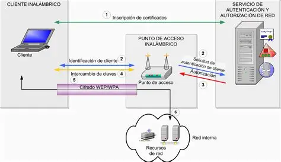

Análisis de servicios de seguridad (X.800 y RFC 4949)
Análisis de servicios de seguridad (X.800 y RFC 4949)
Datos Generales
Institución: Universidad Politécnica de San Luis Potosí Materia: CNO V – Seguridad Informática Estudiante: López Castro Diego – 182032 Profesor: Mtro. Servando López Contreras Fecha de entrega: 27 – Enero – 2026
Introducción contextual
El marco ITU-T X.800 y el Glosario oficial RFC son marcos de vital importancia para
la seguridad informática. El marco ITU-T X.800 es el comunicado emitido por la
Unión Internacional de Telecomunicaciones (UIT), que tiene como propósito de
brindar un servicio de seguridad a través de seis definiciones clave para mantener
a flote la triada de la seguridad informática: integridad, disponibilidad y
confidencialidad, mientras que el RFC 4949 ofrece una amplia gama de conceptos
necesarios para la comprender de forma formal la rama de la ciberseguridad. Ambos
conceptos son de vital importancia para dicha rama puesto que es gracias a ellos
es que, conociendo cualquier situación relacionada al tema de la ciberseguridad, se
puede analizar si una infraestructura o sistema de redes se encuentra seguro en su
seguridad informática, conociendo los conceptos que engloban al mismo a
profundidad y mostrar el mejor resultado posible.
La presenta página tiene la finalidad de analizar diversos escenarios y, en base
a sus respectivas características, evaluar en base a los dos marcos antes
mencionados la situación y recomendar una medida de control para tratar de
solucionar cada caso.
Escenario 1
En múltiples incidentes atribuidos al grupo LockBit, organizaciones públicas y
privadas han sufrido el cifrado masivo de servidores tras un acceso inicial no
autorizado. Antes de ejecutar el ransomware, los atacantes exfiltraron información
sensible y posteriormente amenazaron con su publicación, evidenciando un
compromiso simultáneo de la confidencialidad, la integridad y la disponibilidad.
Desde el enfoque del RFC 4949, el incidente se clasifica como un multi-stage attack
con data breach y availability attack, donde la indisponibilidad del sistema es solo
una fase final del daño. La ausencia de respaldos inmutables y de detección
temprana permitió que el impacto fuera total
Elemento
Respuesta
Servicios X.800 comprometidos
Confidencialidad de datos,
disponibilidad, integridad de datos y
control de acceso.
Definición(es) aplicable(s) RFC 4949
multi-stage attack: Es aquel ataque en
donde se siguió una secuencia de
etapas para comprometer el sistema
objetivo. data breach: Incidente que implica la
copia, tranmisión, visualización, robo o
uso de información sensible por parte
de una persona no autorizada. availability attack: Tipo de ataque que
retrasa o que definitivamente impide los
accesos autorizados a una parte del
sistema.
Tipo de amenaza
Externa (Ya que se usaron credenciales válidas)
Vector de ataque
Se acceso no autorizado seguido de un
ataque de varias etapas en donde hubo
exfiltración y el uso del ransomware.
Impacto técnico / operativo
Se perdió la disponibilidad de los
sistemas, se expuso información
sensible y se interrumpieron las
operaciones.
Medida de control recomendada
Usar respaldos inmutables y el
monitoreo y detección rápida y
temprana de comportamientos fuera de
lo normal.
Tabla 1. Escenario 1
Escenario 2
En diversos casos documentados, bases de datos completas quedaron accesibles
públicamente debido a errores de configuración en servicios de almacenamiento en
la nube. No existió una explotación técnica sofisticada, sino una falla en el control
de acceso, lo que derivó directamente en la pérdida de confidencialidad de los
datos. El RFC 4949 describe este tipo de incidentes como misconfiguration y
exposure, subrayando que la amenaza no siempre implica malware o intrusión
activa. El impacto suele ser legal y reputacional, aun cuando no se pueda demostrar
acceso malicioso.
Elemento
Respuesta
Servicios X.800 comprometidos
Control de acceso y Confidencialidad de Datos.
Definición(es) aplicable(s) RFC 4949
Misconfiguration: Es aquella que
ocurre cuando un sistema, una
aplicación o un servicio en la nube se
configura incorrectamente desde una
perspectiva de seguridad.
Exposure: Amenaza en donde son
liberados de forma directa datos
sensibles a una entidad sin
autorización.
Tipo de amenaza
Interna (Pues todo ocurrió por un error en la configuración)
Vector de ataque
La exposición de bases de datos
gracias a una configuración incorrecta
en los controles de acceso en los
servicios en la nube
Impacto técnico / operativo
Se perdió la confidencialidad de
información sensible, además de
sanciones y un posible daño
reputacional.
Medida de control recomendada
Revisión constante de la configuración
en el servicio en la nube, además de la
aplicación de privilegios mínimos.
Tabla 2. Escenario 2
Escenario 3
Un proveedor legítimo de software fue comprometido y distribuyó una actualización
que incluía código malicioso, afectando a cientos de organizaciones que confiaban
en él. Este escenario refleja una violación grave de la integridad de los sistemas y,
en muchos casos, de la confidencialidad, al permitir accesos no autorizados
posteriores. El RFC 4949 lo identifica como supply chain attack, destacando el
abuso de relaciones de confianza. El daño es particularmente crítico porque rompe
el supuesto de legitimidad del software firmado.
Elemento
Respuesta
Servicios X.800 comprometidos
Integridad de Datos, Confidencialidad
de Datos, Autentificación.
Definición(es) aplicable(s) RFC 4949
supply chain attack: Los atacantes
comprometen primero a un proveedor,
software o servicio confiable y utiliza el
acceso para propagar el ataque los
usuarios que dependan del mismo
Tipo de amenaza
Externa (Ya que fue del mismo proveedor)
Vector de ataque
Se comprometió al proveedor y se
distribuyó una actualización ilegítima.
Impacto técnico / operativo
Se ejecutó código malicioso en
sistemas que eran confiables, accesos
sin autorización y pérdida de confianza
en el proveedor
Medida de control recomendada
Validación de las actualizaciones para
verificar que estas sean seguras.
Tabla 3. Escenario 3
Escenario 4
Mediante campañas de phishing, atacantes obtuvieron credenciales válidas y
accedieron a sistemas corporativos durante meses sin levantar alertas. Aunque la
autenticación funcionó técnicamente, el servicio de autenticación fue comprometido
al basarse en credenciales robadas, afectando también el control de acceso. Según
el RFC 4949, se trata de un credential compromise con authentication failure
conceptual, no técnica. La falta de MFA y de monitoreo de comportamiento facilitó
la persistencia del atacante.
Elemento
Respuesta
Servicios X.800 comprometidos
Atenticación y Control de Acceso.
Definición(es) aplicable(s) RFC 4949
credential compromise: Se define
como la adquisición sin autorización de
credenciales legítimas. authentication failure: El atacante
consigue engañar a un sistema para
que reconozca a un usuario inválido o
incorrecto como legítimo.
Tipo de amenaza
Externa (Se obtuvieron credenciales válidas)
Vector de ataque
Se engañó al personal y se obtuvieron
credenciales válidas.
Impacto técnico / operativo
Acceso prologando no autorizado a los
sistemas, se evadieron mecanismos de
detección y riesgo de exfiltración de
información.
Medida de control recomendada
Autentificación multifactor y monitoreo
de la actividad de usuarios
Tabla 4. Escenario 4
Escenario 5
En ataques de ransomware avanzados, los atacantes eliminaron o cifraron los
respaldos antes de afectar los sistemas productivos. Este hecho compromete
directamente la disponibilidad y la integridad de la información, al impedir la
recuperación. El RFC 4949 clasifica este comportamiento como data destruction y
availability attack, evidenciando intención deliberada de maximizar el daño. La
inexistencia de respaldos offline o inmutables convierte el incidente en catastrófico.
Elemento
Respuesta
Servicios X.800 comprometidos
Disponibilidad e Integridad de Datos.
Definición(es) aplicable(s) RFC 4949
Data destruction: Los atacantes
pueden destruir datos y archivos en
sistemas específicos o en grandes
cantidades en una red para interrumpir
la disponibilidad de sistemas, servicios
y recursos de red. Availability attack: Interrupción por
parte de los atacantes a componentes o
sistemas esenciales para impedir que el
propietario y el operador entreguen
productos o servicios.
Tipo de amenaza
Externa (Se eliminaron los respaldos)
Vector de ataque
Acceso no autorizado previo y
eliminación de respaldos.
Impacto técnico / operativo
Imposibilidad de recuperar la
información.
Medida de control recomendada
Implementar respaldos sin depender de
internet e inmutables.
Tabla 5. Escenario 5
Escenario 6
Un empleado con acceso legítimo extrajo bases de datos completas y las vendió a
terceros, sin explotar vulnerabilidades técnicas. El servicio afectado fue
principalmente la confidencialidad, junto con fallas en el control de acceso por
exceso de privilegios. El RFC 4949 define este escenario como insider threat,
destacando que el riesgo interno puede ser tan grave como el externo. La carencia
de monitoreo y de políticas de mínimo privilegio fue determinante.
Elemento
Respuesta
Servicios X.800 comprometidos
Confidencialidad de datos y Control de
Acceso.
Definición(es) aplicable(s) RFC 4949
Insider threat: Es aquella amenaza
que proviene de personas dentro de
una organización
Tipo de amenaza
Interna (Pues la causó un empleado)
Vector de ataque
Acceso legítimo y extracción de bases
de datos completas.
Impacto técnico / operativo
Se perdió la confidencialidad de la
información.
Medida de control recomendada
Aplicación estricta de privilegios y
monitoreo de actividades.
Tabla 6. Escenario 6
Escenario 7
Tras un ataque, los registros del sistema quedaron cifrados o alterados, impidiendo
reconstruir la secuencia de eventos. Esto compromete la integridad de los datos y
el no repudio, ya que no es posible demostrar qué ocurrió ni quién fue responsable.
Desde el RFC 4949, se trata de una violación de evidentiary integrity y del audit trail.
El impacto no solo es técnico, sino también probatorio y legal.
Elemento
Respuesta
Servicios X.800 comprometidos
Integridad de Datos y No Repudio.
Definición(es) aplicable(s) RFC 4949
Evidentiary integrity: Aseguramiento
de que los datos presentados como
prueba o evidencia fueron alterados
desde su adquisición. Audit Trail: Registro cronológico de
actividades o eventos que sirve como
evidencia de lo que se ha realizado,
quién lo a realizado y cuándo se ha
realizado.
Tipo de amenaza
Externa (Porque fue gracias a un atacante no autorizado)
Vector de ataque
Manipulación deliberada de registros y
bitácoras del sistema gracias al acceso
no autorizado.
Impacto técnico / operativo
Imposibilidad de reconstruir la
secuencia de eventos.
Medida de control recomendada
Implementar los registros de forma
centralizada e inmutable.
Tabla 7. Escenario 7
Escenario 8
Una actualización mal ejecutada provocó la caída simultánea de múltiples servicios
críticos a nivel global. Aunque no existió un atacante, el servicio de disponibilidad
fue gravemente afectado. El RFC 4949 contempla estos eventos como operational
failure, recordando que la seguridad también se ve afectada por errores internos. La
falta de pruebas previas y planes de reversión amplificó el impacto.
Elemento
Respuesta
Servicios X.800 comprometidos
Disponibilidad.
Definición(es) aplicable(s) RFC 4949
Operational failure: Incidente de
seguridad causado por un fallo
operacional que provoca interrupciones
o pérdidas de servicio.
Tipo de amenaza
Interna (Se originó dentro de la organización)
Vector de ataque
Actualización mal ejecutada en sistemas críticos.
Impacto técnico / operativo
Se interrumpieron de forma global los
servicios y afectaron la continuidad del
negocio.
Medida de control recomendada
Se deben de implementar procesos formales de gestión de cambios.
Tabla 8. Escenario 8
Escenario 9
Atacantes replicaron sitios y correos oficiales para engañar a ciudadanos y obtener
información sensible. Este escenario afecta la autenticación, al suplantar
identidades legítimas, y la confidencialidad de los datos recolectados. El RFC 4949
lo clasifica como masquerade y phishing, subrayando el componente de ingeniería
social. La ausencia de mecanismos de autenticación del dominio y de
concientización facilitó el éxito del ataque.
Elemento
Respuesta
Servicios X.800 comprometidos
Autenticación y Confidencialidad de Datos.
Definición(es) aplicable(s) RFC 4949
Masquerade: Manipulación de las
características de uno o varios
elementos para que estos parezcan
legítimos o inofensivos a los usuarios o
a las herramientas de seguridad. Phishing: Envío de mensajes o correos
electrónicos con archivos o enlaces
maliciosos, los cuáles se basan en
ingeniería social transmitida
electrónicamente.
Tipo de amenaza
Externa (Los atacantes son ajenos a la empresa)
Vector de ataque
Hubo suplantación de identidad gracias a servicios web y correos falsos.
Impacto técnico / operativo
Se obtuvo información no autorizada
sensible y la pérdida de confianza en
los usuarios.
Medida de control recomendada
Implementar sistemas de
autentificación del correo y dominio y
capacitar al personal sobre el Phishing.
Tabla 9. Escenario 9
Escenario 10
En algunos incidentes, tras exfiltrar información, los atacantes ejecutaron acciones
destructivas para borrar sistemas completos y eliminar rastros. Se produce un
compromiso total de la confidencialidad, la integridad y la disponibilidad,
configurando uno de los peores escenarios posibles. El RFC 4949 describe este
patrón como destructive attack, donde el objetivo no es solo el lucro, sino el daño
irreversible. La detección tardía impidió cualquier contención efectiva.
Elemento
Respuesta
Servicios X.800 comprometidos
Confidencialidad de Datos, Integridad
de Datos y Disponibilidad.
Definición(es) aplicable(s) RFC 4949
destructive attack: Ataque activo cuyo
objetivo es destruir o corromper datos o
sistemas.
Tipo de amenaza
Externa (Porque fueron atacantes ajenos).
Vector de ataque
Acceso no autorizado que le siguió
exfiltración de información y ejecución
de acciones destructivas.
Impacto técnico / operativo
Perdida permanente de información y
sistemas sin posibilidad de recuperarla.
Medida de control recomendada
Implementar métodos de detección
temprana de intrusiones, además de
realizar respaldos inmutables que no
dependan de internet.
Tabla 10. Escenario 10

Figura 1. Modelo de seguridad
11. Opinión/reflexión técnica del estudiante
El análisis de los distintos escenarios evidencia que las amenazas a los sistemas
de información no provienen exclusivamente de ataques externos sofisticados, sino
también de errores operativos, configuraciones incorrectas y abusos de privilegios
internos. Desde el enfoque de los marcos de seguridad X.800 y las definiciones del
RFC 4949, se observa que la confidencialidad, la integridad y la disponibilidad
continúan siendo los pilares más vulnerados, frecuentemente de manera
simultánea, lo que amplifica el impacto técnico, operativo y legal de los incidentes.
Los casos analizados demuestran que ataques como ransomware avanzado,
supply chain attacks y destructive attacks responden a estrategias deliberadas y
siguiendo una secuencia de pasos, orientadas no solo a lo económico, sino al daño
en la estructura y a la interrupción de operaciones. Asimismo, incidentes como la
exposición de datos por misconfiguración, el credential compromise o las fallas
operativas ponen en evidencia que la seguridad no puede limitarse a controles
técnicos aislados, sino que depende de procesos, personas y gobernanza.
En el contexto latinoamericano, estos riesgos se ven aumentados por limitaciones
presupuestales, brechas de capacitación, etc, por ello, como propuesta aplicable,
es necesario fortalecer una cultura de seguridad basada en gestión de riesgos,
donde se integren controles técnicos viables como autenticación multifactor,
segmentación de redes y respaldos offline, junto con medidas organizacionales
como gestión de cambios, mínimo privilegio, auditoría de accesos y concientización
del personal. La adopción de marcos, adaptados a la escala y recursos de cada
organización, representa una estrategia realista para mejorar la resiliencia sin
requerir inversiones inalcanzables.
La seguridad de la información debe entenderse como un proceso continuo y
transversal. La combinación de prevención, detección temprana y capacidad de
respuesta, alineada a estándares internacionales pero contextualizada a la realidad
regional, es clave para reducir el impacto de incidentes y fortalecer la confianza en
los sistemas de información en América Latina.
Video
3.8 Seguridad en Servicios IP | CCNA 200-301 | Wild IT Academy
National Institute Of Standards and Technology (NIST). (26 de febrero de 2024). El
Marco de Seguridad Cibernética (CSF) 2.0 del NIST. Obtenido de NIST.
Recuperado del 27 de enero de 2026 de:
https://nvlpubs.nist.gov/nistpubs/CSWP/NIST.CSWP.29.spa.pdf